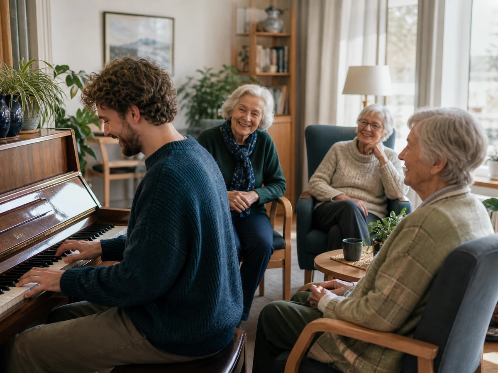
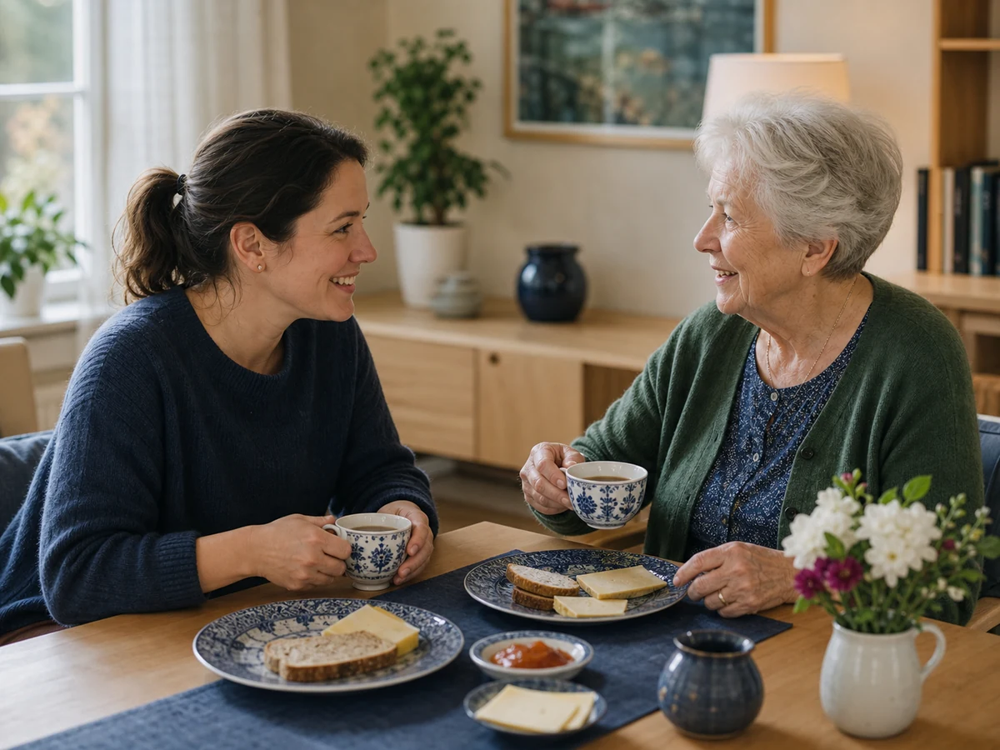

Bli med på de gode stundene
En tur i nærmiljøet. Litt musikk i fellesrommet. En hyggelig lunsj sammen. På Vinderenhjemmet kan en enkel aktivitet gi en beboer noe å glede seg til - og gi deg et varmt, meningsfullt møte tilbake.
Du velger hva, når og hvor ofte
Det er de enkle stundene
Noe å glede seg til i hverdagen
Noen av de beste stundene i hverdagen er ganske enkle. En tur ute. En melodi som fyller rommet. En god samtale over lunsjen.
På Vinderenhjemmet bor det mennesker som har glede av akkurat slike møter. Du trenger ikke fylle en fast vaktplan eller binde deg til en bestemt ukedag. Du velger aktiviteten som passer deg, og sammen finner vi dag, tidspunkt, varighet og hyppighet.
Litt av tiden din kan bli til en god stund for en beboer - og en hyggelig, meningsfull opplevelse for deg.
Velg det som passer deg
Tre måter å bidra på
Du kan velge én aktivitet, eller fortelle oss at du er åpen for forslag.
-
Gå en tur sammen
Du og én beboer går en tur i nærmiljøet. Det er tid til frisk luft, små samtaler og det dere møter på veien. Turen gjennomføres uten ansatte, og rammene avtales på forhånd.
-

Fyll rommet med musikk
Spill for beboere i et fellesrom - eller for én enkelt beboer hvis du ønsker det. Det finnes piano i alle avdelinger. Spiller du et annet instrument, tar du det med selv.
-

Del en lunsj
Sett deg ned sammen med en beboer og la måltidet få litt bedre tid. Lunsjen er gratis for deg; det du bidrar med, er selskap, samtale og nærvær.
En trygg start
Personalet på Vinderenhjemmet tar deg godt imot, viser deg til rette og hjelper med det praktiske. De vet hvor mye frivillige bidrar til miljøet på hjemmet - og de er oppriktig glade for hver og en som kommer.
- Personalet hjelper deg i gang og avklarer det praktiske.
- Du godkjenner VAFS' retningslinjer før oppstart.
- Du signerer et taushetsløfte før du begynner.
- Det kreves ikke politiattest.
Helt uforpliktende
Hva har du lyst til å bidra med?
Velg én eller flere aktiviteter og fortell når det vanligvis passer for deg. Vi tar kontakt før noe blir avtalt.
Har du spørsmål? Ring Vestre Aker Frivilligsentral på 23 22 05 80 eller send e-post til espen@vestreaker.frivilligsentral.no.
Et samarbeid i nærmiljøet
Gode møter skapes sammen
Vestre Aker Frivilligsentral og Vinderenhjemmet samarbeider for å skape gode møter og mer aktivitet sammen med beboerne. Frivillige tilfører tid, interesser og nye samtaler - og blir godt tatt imot av personalet.